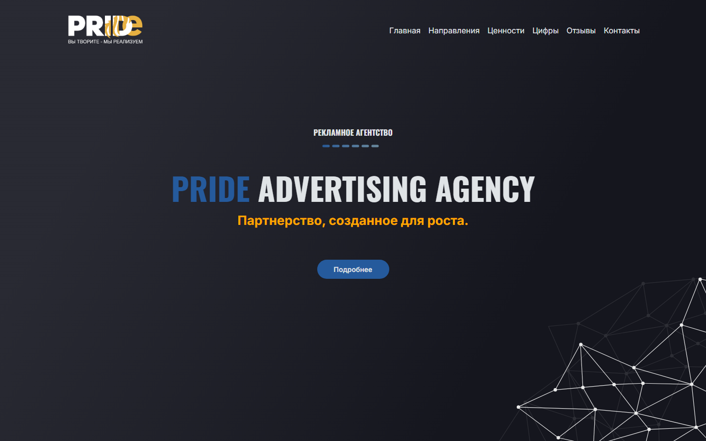
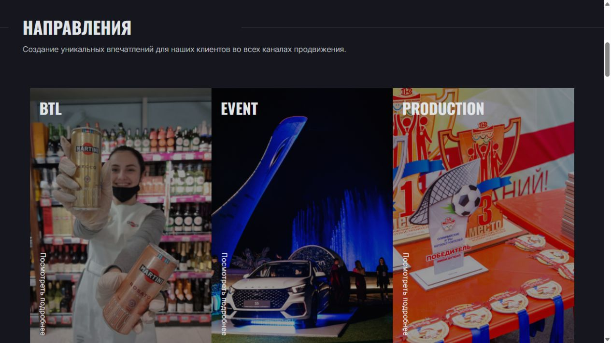
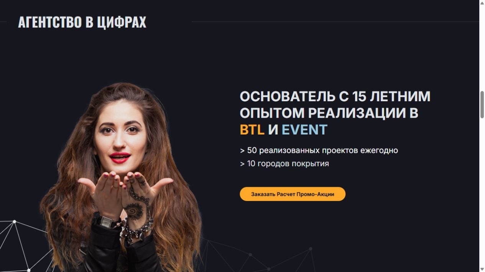

Позиционирование
Ключевой тезис и характер бренда собраны на первом экране.
Имиджевый сайт, который показывает масштаб агентства через направления, ценности, географию и реализованные проекты.

Корпоративный сайт должен быстро объяснить специализацию рекламного агентства, подкрепить её фактами и привести потенциального клиента к расчёту проекта.
Открыть живой сайт ↗Ключевой тезис и характер бренда собраны на первом экране.
Три услуги представлены крупными визуальными карточками.
Опыт, количество проектов и города покрытия подтверждают компетенции.
Форма расчёта продолжает коммерческий сценарий сайта.
Крупная типографика, реальные события и контрастная подача формируют запоминающийся образ агентства.


Посетитель сразу видит три главных направления агентства.
Фокус на услугахОпыт, ежегодные проекты и география встроены в презентацию.
Сильные аргументыСтраница завершает историю формой расчёта промоакции.
Путь к заявке